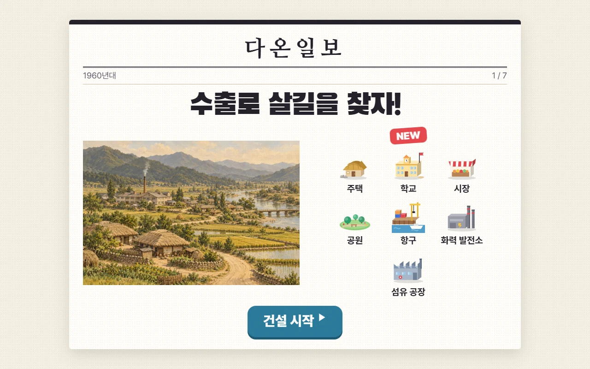
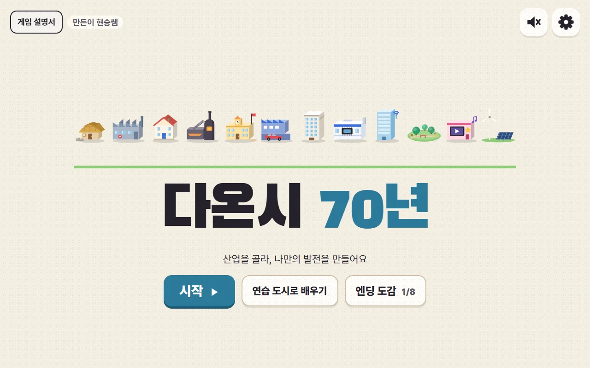
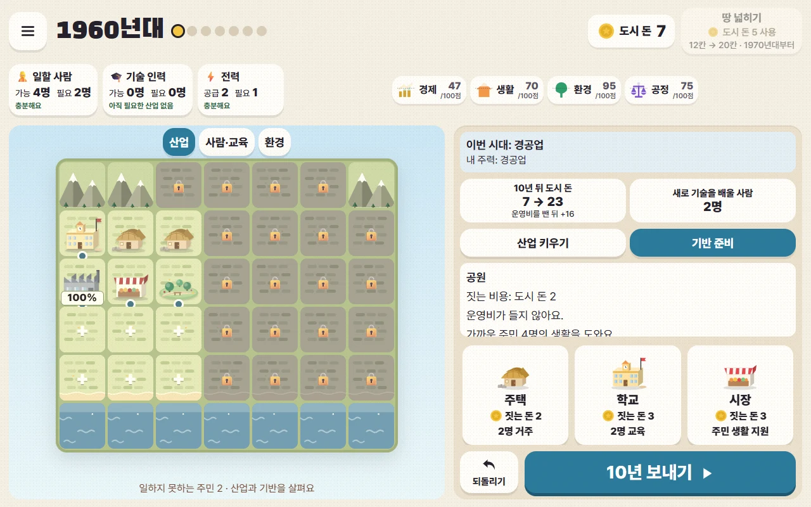
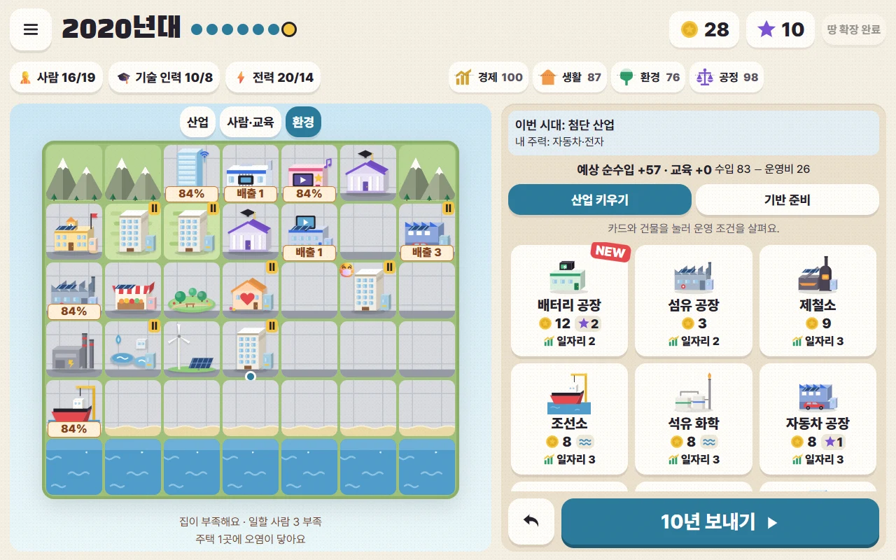
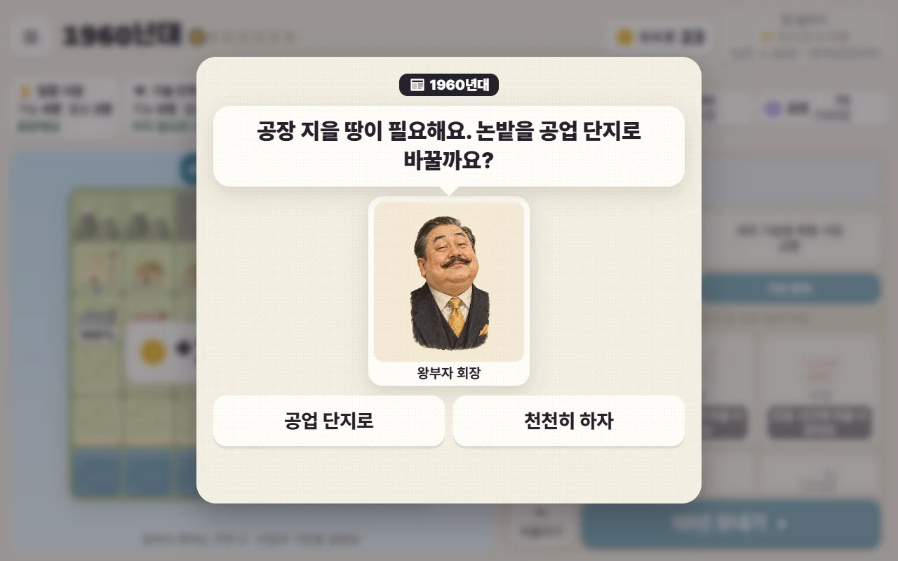
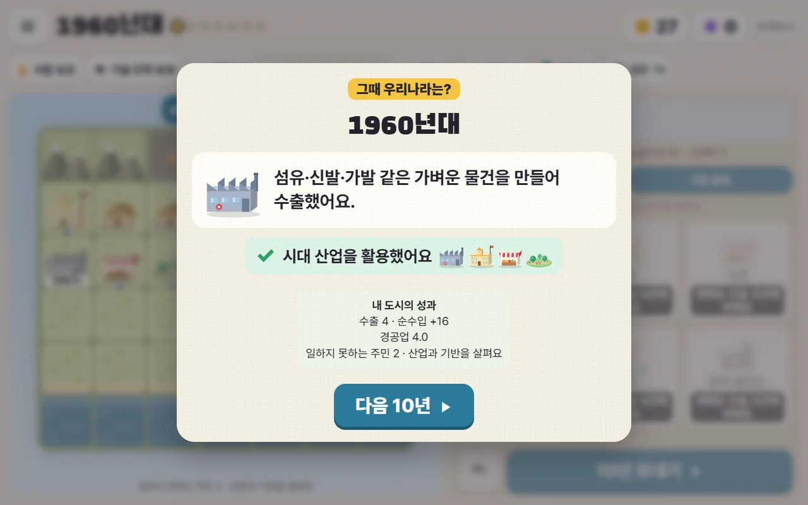
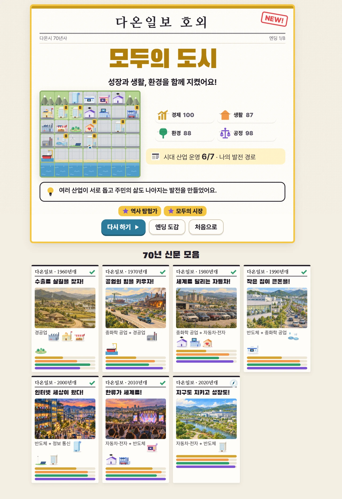
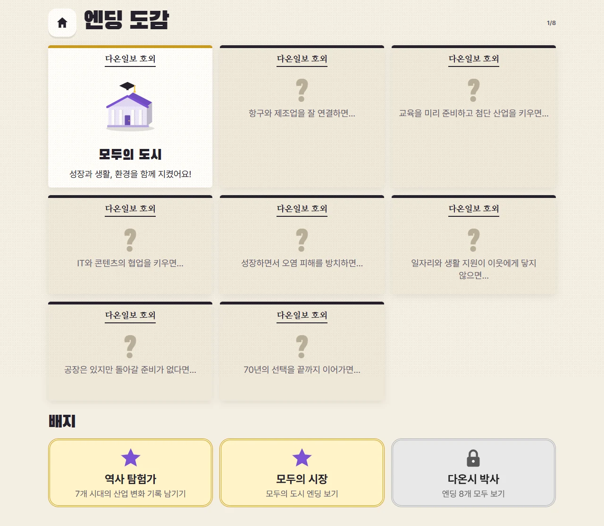

1
시대의 산업 기회 읽기
10년마다 오는 다온일보에서 이 시대에 등장하는 산업과 건물을 살펴요. 큰 풍경 그림은 그 시대를 소개하는 엽서예요. 실제 내가 짓는 도시는 지도에서 확인해요.
🔎건설 시작을 누르면 나의 도시로 들어가요.
우리나라 산업의 변화를 읽고, 나만의 발전을 만들어요.

시장이 되어 우리 도시가 키울 산업과 그 산업에 필요한 기반을 선택해요.
경공업에서 중화학 공업, 자동차·전자, 첨단 산업과 문화 콘텐츠까지 70년을 경험해요. 경제뿐 아니라 생활·환경·공정도 살펴요.
🧭산업 기회 읽기 → 산업 선택 → 사람·교육·전력 준비 → 10년 운영 → 역사와 비교
💡역사를 그대로 따라 하는 것이 정답은 아니에요. 내가 준비한 기반으로 다른 발전 경로를 만들 수 있어요.

10년마다 오는 다온일보에서 이 시대에 등장하는 산업과 건물을 살펴요. 큰 풍경 그림은 그 시대를 소개하는 엽서예요. 실제 내가 짓는 도시는 지도에서 확인해요.
🔎건설 시작을 누르면 나의 도시로 들어가요.

산업 키우기에서 공장을 고르고 지도의 + 칸을 눌러요. 기반 준비에서 집·학교·발전소 등을 골라 부족한 조건을 채워요. 사람·기술 인력·전력은 앞 숫자가 준비된 양, 뒤 숫자가 산업에 필요한 양이에요.
🔎예를 들어 섬유 공장은 일할 사람 2명과 전력 1이 필요해요. 카드와 지은 건물을 누르면 운영 조건을 볼 수 있어요.

가동률은 공장이 얼마나 돌아가는지 보여요. 50%라면 준비한 조건이 부족해 절반만 생산해요. 환경 보기의 주황색 칸은 배출이 남은 건물, 😷 표시는 오염 피해를 받는 주택이에요.
🔎학교·정화 시설을 누르면 영향 범위가 보여요. 사람·교육 보기에서는 주택의 주민과 교육받는 인원을 확인해요.

예상 순수입은 수입에서 운영비를 뺀 값이에요. 준비가 됐다면 10년 보내기를 눌러요. 산업이 생산하고 주민이 교육받은 뒤 시대의 사건과 선택이 찾아와요.
🔎석유 파동처럼 내 도시의 전력 사용량에 따라 손해가 달라지는 사건도 있어요.

그때 우리나라는? 카드에서 실제 산업 발전을 읽어요. 아래에는 내 도시의 수출, 순수입, 주력 산업과 부족했던 조건이 나와요.
🔎같은 산업을 운영했다면 시대 산업을 활용했어요, 다른 산업을 운영했다면 다온시는 다른 산업을 키웠어요라고 나와요. 어느 쪽도 오답이 아니에요.

2020년대까지 진행하면 나의 산업 방향과 주민의 삶에 따른 엔딩이 나와요. 아래 신문 모음에서 내가 어떤 산업을 키웠는지 되돌아봐요.
🔎기술 도시·문화 도시·수출 도시 등 8개 엔딩이 있어요. 다음에는 교육 시기나 산업 조합을 바꿔 도전해요.
✅10년 보내기 전 확인: 사람·전력·기술이 충분한가요? 피해 주택은 어디인가요? 다음 산업을 위한 교육을 준비했나요?

6학년 사회 · 우리나라 경제 성장
산업의 변화 자체와 산업을 가능하게 한 인력·교육·전력·물류를 함께 경험합니다. 공장을 짓는 것과 실제로 운영하는 것의 차이, 성장이 남긴 환경·생활 문제를 지도에서 확인합니다. 실제 역사와의 일치 횟수로 정답을 채점하지 않습니다.